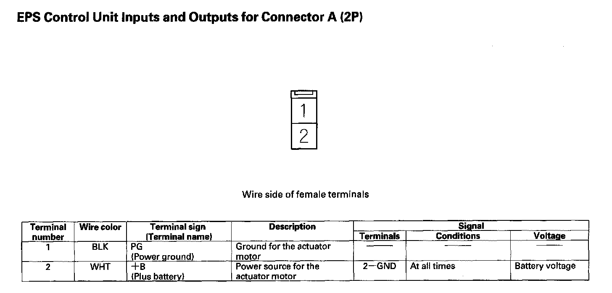
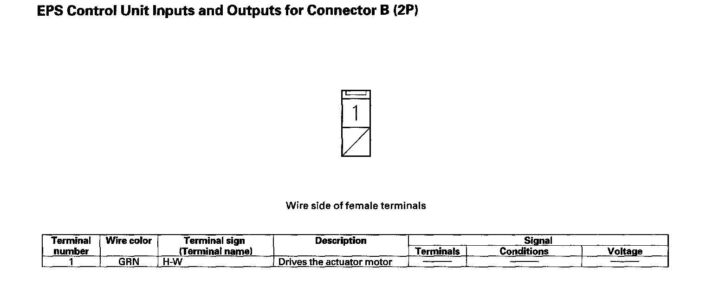
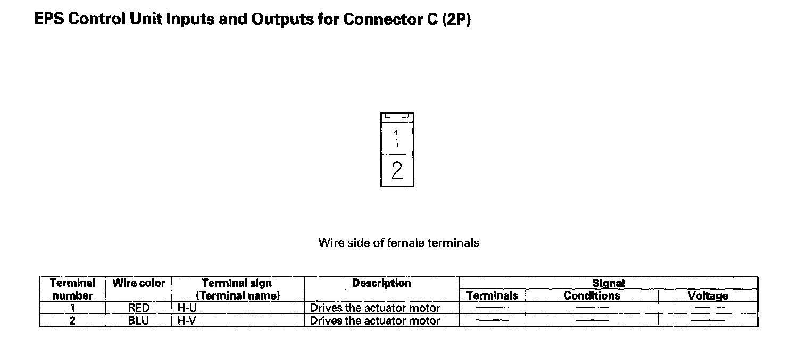
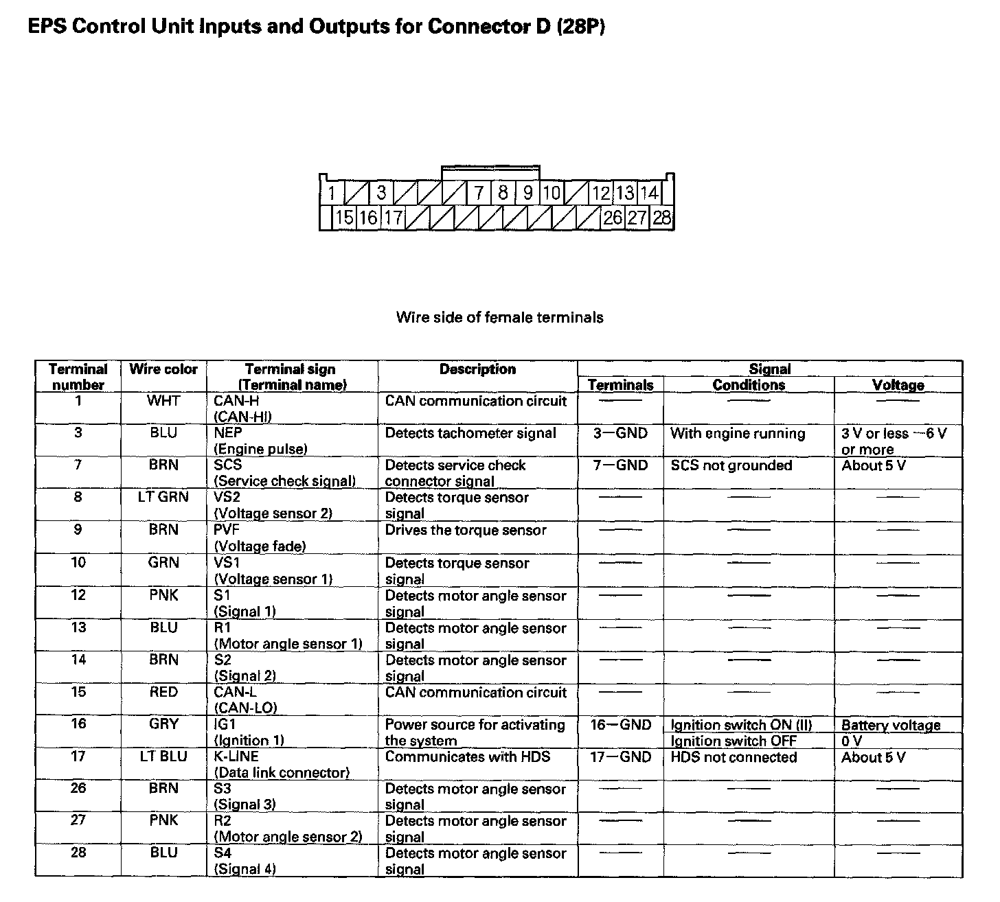

Steering Control Module: Testing and Inspection
EPS Control Unit Inputs and Outputs for Connector A (2P):

EPS Control Unit Inputs and Outputs for Connector B (2P):

EPS Control Unit Inputs and Outputs for Connector C (2P):

EPS Control Unit Inputs and Outputs for Connector D (28P):
